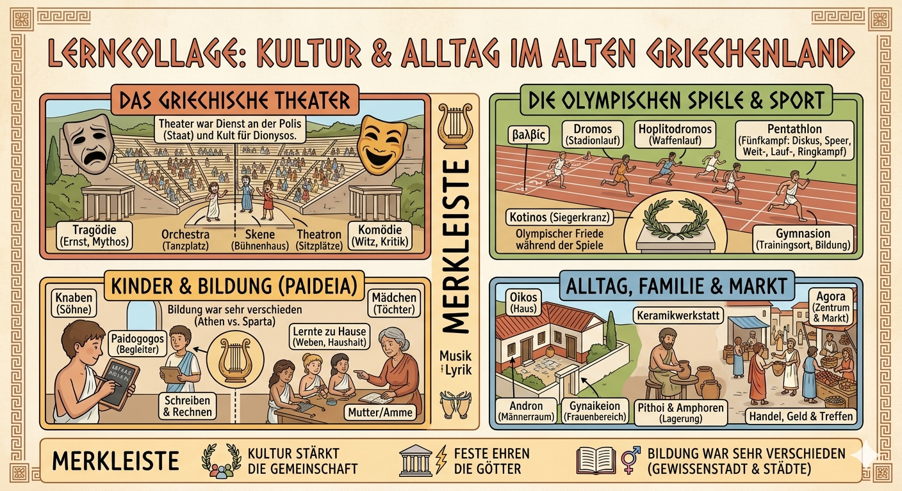
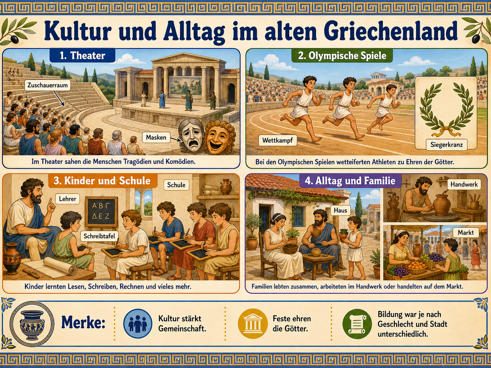

Kultur ist nicht nur Schmuck. An Theater, Sportfesten, Schule, Familie und Markt
erkennt man, was Menschen wichtig fanden: Goetter ehren, zur Polis gehoeren,
Leistung zeigen, Rollen lernen und Unterschiede zwischen freien Buergern,
Frauen, Kindern, Fremden und versklavten Menschen erleben.

Die Lernkollage zeigt die vier Leitfragen des Moduls: Wo feierten Griechen gemeinsam? Wie wurde gelernt? Wer gehoerte dazu? Wer blieb ausgeschlossen?
Lehrplanidee: Was soll man daran lernen?
Das Thema passt in den Bereich Die Welt der Griechen. Es geht nicht darum,
moeglichst viele Einzelheiten auswendig zu kennen. Wichtig ist, Lebenswelten zu
vergleichen, Fachbegriffe zu benutzen und aus Bildern, Texten und Gegenstaenden
Rueckschluesse auf eine Gesellschaft zu ziehen.
1. Erkennen
Du ordnest Bilder und Begriffe: Theater, Olympia, Schule, Oikos, Agora.
2. Deuten
Du erklaerst, was diese Bereiche ueber Religion, Gemeinschaft und Macht zeigen.
3. Vergleichen
Du vergleichst Athen, Sparta, Maedchen, Jungen, freie Menschen und Sklaven.
Der rote Faden: Vier Fenster in die Polis
Klicke die Bereiche an. Merke dir immer: Ein Bereich zeigt nicht nur Alltag,
sondern auch Werte und Grenzen der griechischen Gesellschaft.
Theater: mehr als Unterhaltung
In Athen waren Theaterauffuehrungen mit Festen fuer Dionysos verbunden.
Aufgefuehrt wurden Tragoedien, Komoedien und andere Stuecke vor grossem Publikum.
Die Menschen sahen dort Konflikte, Mythen, Schuld, Mut, Herrschaft, Familie und
manchmal auch Spott ueber Politik.
Deshalb war Theater eine Schule der Polis: Die Zuschauer dachten gemeinsam ueber
Regeln, Entscheidungen und menschliches Verhalten nach. Komoedien konnten sehr
kritisch sein, Tragoedien zeigten oft schwere Entscheidungen und ihre Folgen.

Kompakte Zweitgrafik als schnelle Wiederholung.
Olympia: Sport, Religion und Ruhm
Religioeses Fest
Die Olympischen Spiele fanden zu Ehren des Zeus in Olympia statt. Sport war also mit Religion verbunden.
Griechische Gemeinschaft
Griechische Stadtstaaten waren politisch getrennt, trafen sich aber bei panhellenischen Festen.
Ruhm statt Medaillen
Sieger erhielten einen Olivenkranz und Ehre fuer sich, Familie und Heimatstadt.
Nicht alle durften mitmachen
Die Teilnahme war stark begrenzt. Freie maennliche Griechen standen im Mittelpunkt.
Kindheit, Schule und Erziehung
Bildung war nicht fuer alle gleich. In Athen konnten Jungen aus wohlhabenderen Familien
Lesen, Schreiben, Rechnen, Musik und Sport lernen. Maedchen wurden meist staerker auf
Haushalt, Familie und textile Arbeiten vorbereitet. In Sparta war Erziehung staerker auf
Disziplin, Koerper und Dienst fuer den Staat ausgerichtet. Auch Status und Geld entschieden:
Sklavenkinder und arme Kinder hatten ganz andere Moeglichkeiten.
Athen
Bildung, Reden, Musik, Schreiben und Sport halfen spaeter beim Leben als Buerger.
Sparta
Erziehung zielte staerker auf Gehorsam, Ausdauer und militaerische Tauglichkeit.
Grenze
Geschlecht, Herkunft und Status entschieden, welche Wege offen standen.
Alltag: Oikos, Agora und soziale Unterschiede
Der Oikos war Haus, Familie, Besitz und Wirtschaftseinheit zugleich. Dort wurde
gekocht, gelagert, gearbeitet, erzogen und verwaltet. Die Agora war Markt- und
Treffpunkt. Dort sah man Handel, Handwerk, Nachrichten, Gespraeche und Politik.
Aber Alltag war ungleich: Maennliche Buerger hatten mehr politische Rechte, Frauen
waren rechtlich und gesellschaftlich begrenzt, Fremde hatten weniger Rechte und
versklavte Menschen mussten fuer andere arbeiten. Gerade deshalb muss man Alltag
historisch immer fragen: Wessen Alltag ist gemeint?
Quellenhinweis
Das Modul nutzt den niedersaechsischen Lehrplanbezug zur griechischen Welt und
historische Basisinformationen zu Theater, Olympia, Alltag, Frauenrollen und Sport.
Die wichtigsten Recherchequellen waren das niedersaechsische Kerncurriculum,
Informationen zu den antiken Olympischen Spielen, Britannica, World History
Encyclopedia und das Metropolitan Museum of Art.